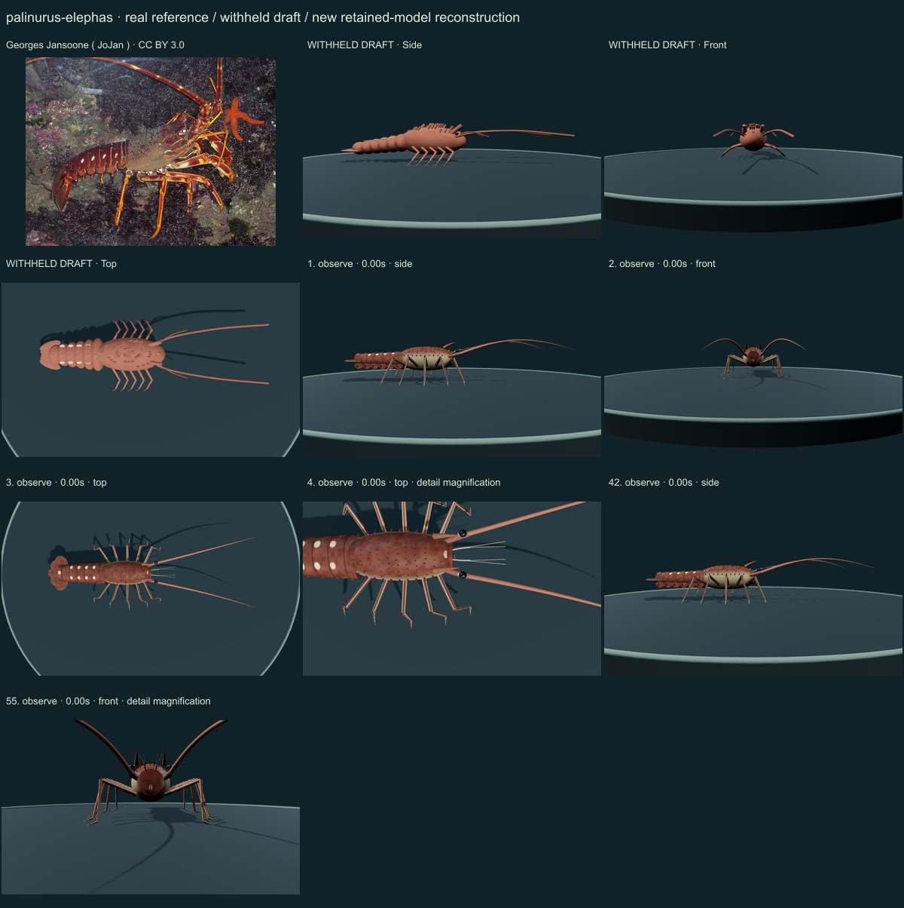
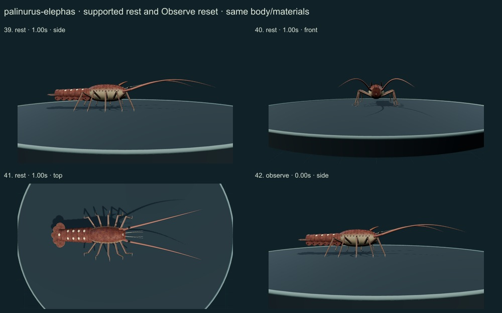
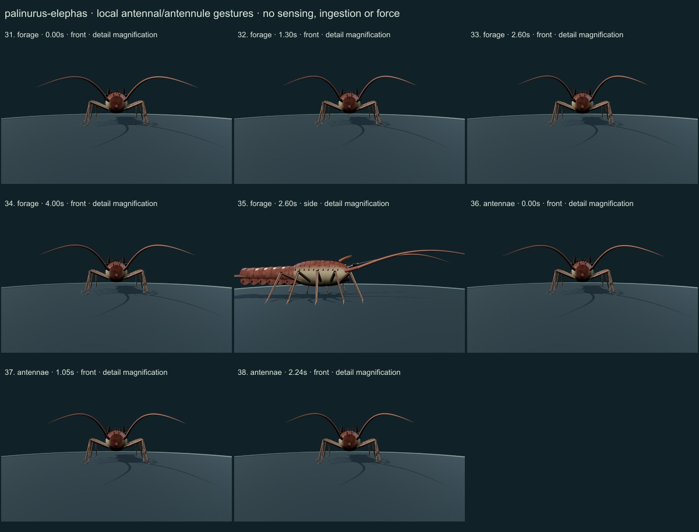
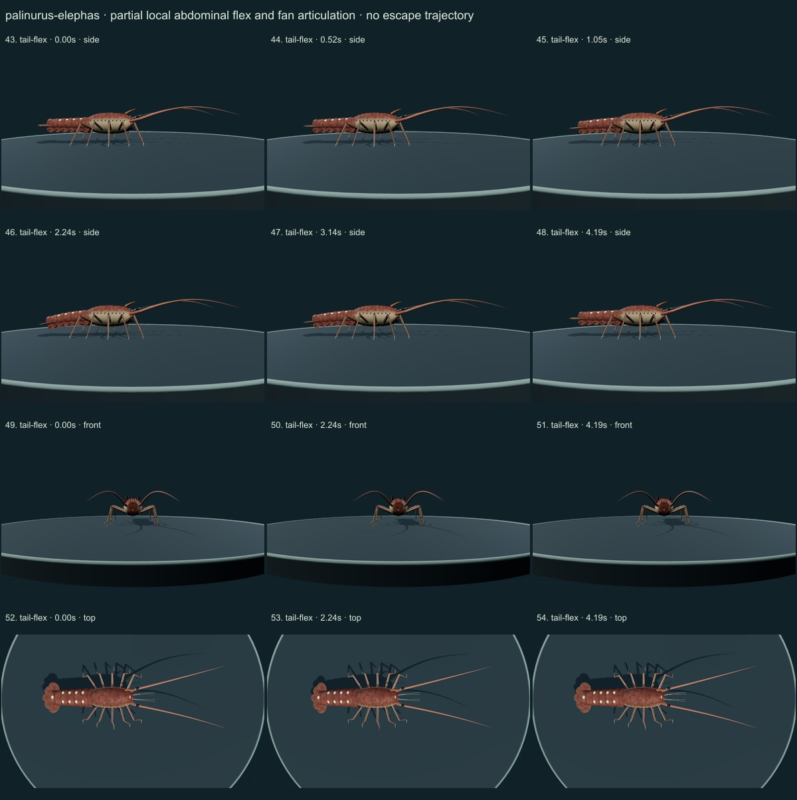
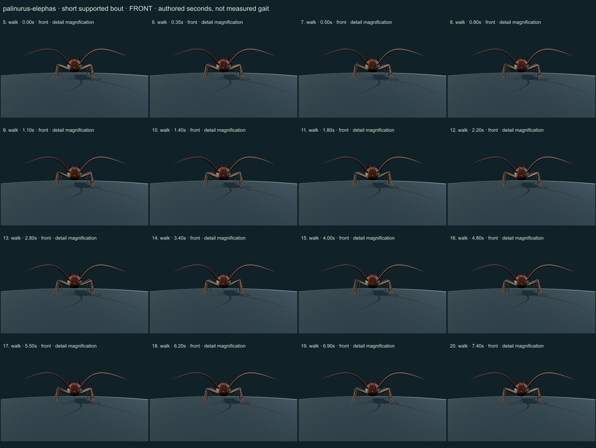
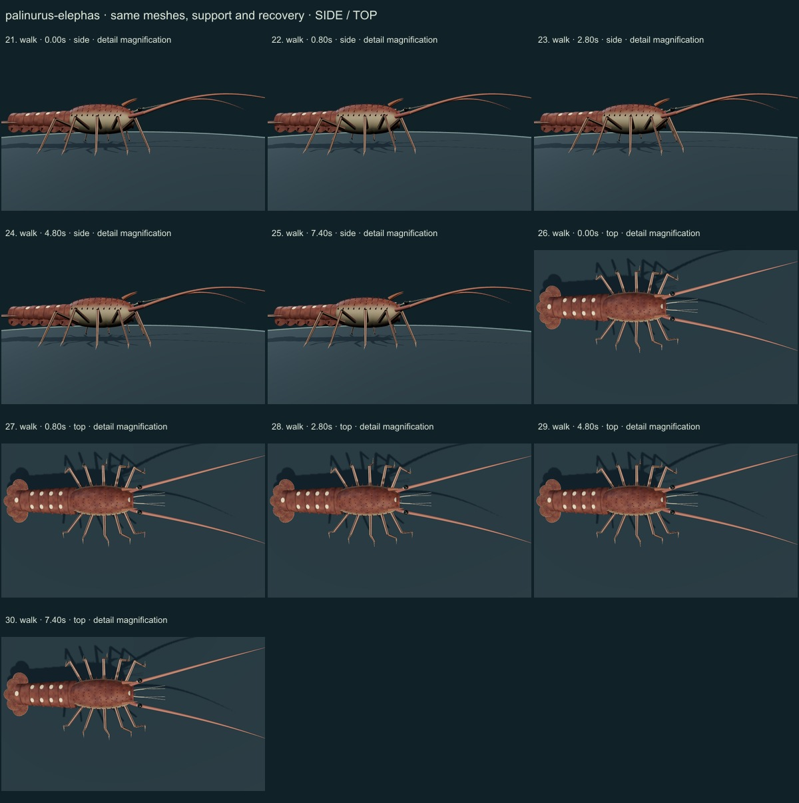

PhenoVoxel Archive · v0.6.21 · October 25, 2026
European spiny lobster
This release reaches 267 records after verified publication. 33 saved drafts remain held; 283 remain to 550, including 250 without saved drafts. Release register.
The authentic JoJan CC BY3.0 Monaco aquarium photograph was viewed alongside selected Naturalis/FAO species/genus diagnoses. Actual Holthuis1991 PDFpage128 printed119 Fig224 and its anterior-carapace detail were rendered and viewed; selected key text page124 printed115 distinguishes species-level groove/spot characters and male-specific P1 armature. The selected non-chelate final-leg form is not an independent determination of source-photo sex.
Georges Jansoone ( JoJan ) · CC BY 3.0. Authentic JoJan Monaco-aquarium source photograph, CC BY3.0, viewed. Selected red-brown phenotype and captive posture do not establish sex, measurements, optics or native-range boundaries. Resized inside 1000 px, flattened and JPEG encoded; no generative alteration.
Exact creator, license, download/local checksums and access scopes remain in the data. Real photographs are not generated media. Primary figures are linked, not redistributed.
Continuous spined carapace, separate visible eye ends, curved dentate supraorbital horns, narrow unarmed antennular plate, shorter antennules, six overlapping grooved abdominal plates with selected paired pale spots, five-part tail fan and ten articulated non-chelate walking limbs replace the oval/rod draft.
Red-brown original numerical cuticle with a subdued pale flank, irregularly spaced seated spines, longitudinal leg streaks, paired spots on somites2–5 and a single posterior spot6. Tapered strong antennae and fine fan-ray cues remain on the same model through all actions.
Remaining: Carapace/head proportions, fine spine coordinates and density, segment grooves, pleural contours, antennal joints, eye microanatomy, maxillipeds and optical properties remain simplified and unmeasured. Ten supported limbs and a mild local tail flex are educational articulation studies, not observed/fitted species kinematics. Female-specific final-leg chelation, sex-modified pleopods, complete mouthparts, internal organs and fluid/feeding functions are not reconstructed. The model is still partly stylized and does not represent every posture, stage or phenotype.
A short authored forward bout with fixed-length limbs and ground-fixed support contacts; local antenna/antennule search gestures, quiet supported rest and mild serial abdominal/fan flex. No full feeding, escape trajectory, forces, calibrated stride or sensory/physiological simulation.
Original qualitative educational reconstruction; proportions, cuticle optics, natural timing, joint limits, forces, feeding, sensing and physiology remain unmeasured. No independent specialist validation or accuracy percentage. Software support checks are not empirical biological validation.
55 actual final nonblank viewer states inspected individually on six labelled sheets; neutral full-organism and enlarged diagnostic views distinguished. Qualitative author assessment, not independent scientist certification.






Original qualitative educational reconstruction; proportions, cuticle optics, natural timing, joint limits, forces, feeding, sensing and physiology remain unmeasured. No independent specialist validation or accuracy percentage. Software support checks are not empirical biological validation. Prior 265 species objects and original wolf/tiger credited meshes are unchanged. Modern taxonomy is retained; legacy Protista/Monera reporting groups are not monophyletic kingdoms. Occurrence records are not native-range boundaries.